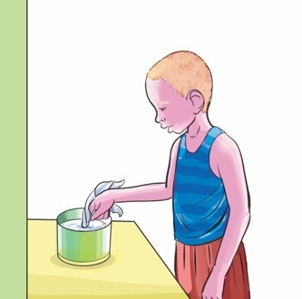
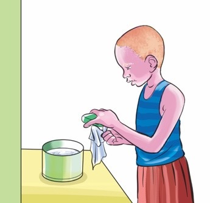
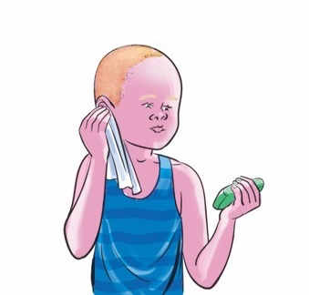
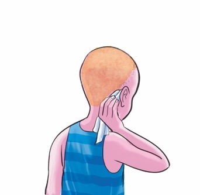

Questions

Questions
1. Name the items used for cleaning ears presented in pictures
1- 4.
2. Name other items used for cleaning the ears that you know.
I know steps for cleaning my ears.

I clean my ears
by following
these steps.


1
2
I dip a clean piece of soft
I apply soap to the wet
cotton cloth in clean water.
soft cotton cloth.


3
4
I clean the front folds
I clean the back folds
of my ear with the wet
of my ear with the wet
soft cotton cloth.
soft cotton cloth.